Вітальня · журнал «ДентАрт» 2020 №2
Професор Акіра Сенда: «У всіх нас є універсальне завдання — сприяти здоров'ю і щастю всього людства»
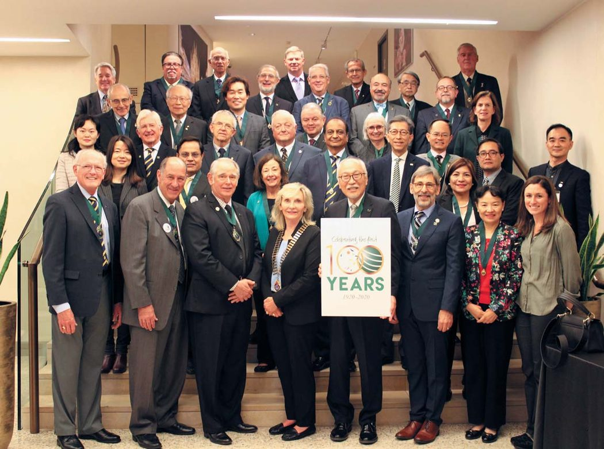
Гість «Вітальні» «ДентАрту» — професор Акіра Сенда, лікар-стоматолог, доктор філософії, президент Міжнародної колегії стоматологів (ICD) 2020 року, викладач Університету Айті Гакуїн у Нагої (Японія). Професор Сенда — автор понад 200 статей і 20 підручників, мав великий досвід керівництва професійними організаціями (IFED, JAED, JSCD, AAAD, JSLD, JSAD).
Сьогодні у Вітальні «ДентАрту» — професор Акіра Сенда, лікар-стоматолог, доктор філософії, президент Міжнародної колегії стоматологів (ICD) 2020 року, талановитий викладач Школи гігієністів при коледжі рідного йому Університету Айті Гакуїн у Нагої, Японія. Професор Сенда — автор понад 200 статей з актуальних проблем стоматології і автор або редактор більш ніж 20 підручників. Він має великий досвід керівництва професійними організаціями стоматологів, оскільки був членом виконавчого комітету Міжнародної федерації естетичної стоматології (IFED), президентом Японської академії естетичної стоматології (JAED), президентом Японського товариства консервативної стоматології (JSCD), виконавчим директором Азійської академії естетичної стоматології (AAAD), Японського товариства лазерної стоматології (JSLD), Японського товариства адгезивної стоматології (JSAD).
«Чекаємо вас, колеги, в Нагої 13 листопада!»
— Конічіва, добридень, шановний Сенда Акіра-сенсей! Вітаємо Вас з обранням на пост президента Міжнародної колегії стоматологів 2020 року і бажаємо успіхів! Як Ви ставитеся до того, що Вас обрали президентом ICD?
— Для мене велика честь і задоволення бути обраним на цю посаду. Я дуже радий працювати в такій поважній міжнародній організації, як ICD. Однак розумію, що це дуже велика відповідальність, тому щиро прошу підтримки членів команди Виконавчого комітету (ЕК), співробітників офісу Колегії та всіх міжнародних членів ради, а також регентів і членів усіх наших секцій по всьому світу. Будь ласка, приєднуйтеся до наших проектів, і будемо разом прагнути до прекрасного майбутнього нашої професії!
Я радий вітати всіх читачів журналу «ДентАрт» і членів ICD з України, Молдови, інших країн і регіонів як президент Міжнародної колегії стоматологів. Передусім хочу висловити свою щиру вдячність докторові Сергію Радлінському, моєму другові по ICD та IFED — Міжнародній федерації естетичної стоматології, за надану можливість поспілкуватися з читачами журналу «ДентАрт».
Як ви, напевно, добре знаєте, ICD вшановує провідних стоматологів світу з 1920 року, а стоматологи, які отримали престижне звання FICD (член Міжнародної колегії стоматологів), нині працюють у 122 країнах світу. Засновники, доктор Луї Оттофі із США і доктор Цурукіті Окумура з Японії, у 1920 році в Токіо обговорили необхідність створення міжнародної організації для вивчення та обміну прогресивними технологіями у стоматології і поширення інформації по всіх країнах світу. Усі ми, члени ICD, тепер так захоплююче відзначаємо «Святкування сторіччя» в цьому році в Японії, де ICD була заснована. ICD пройшла таку довгу, 100-літню подорож і тепер, завершуючи цей віковий етап, повертається на батьківщину в Японію.
Отже, друзі й колеги, приєднуйтеся до нас на святкування 100-річчя ICD, яке відбудеться в Нагої, Японія, 13 листопада 2020 року. Будь ласка, відвідайте веб-сайт <icd100.org> зараз.
«Нині в Японії 29 стоматологічних шкіл»
— Оскільки Японія є одним із центрів ICD і святкування сторіччя буде проводитися у вашій країні, просимо хоча б коротко розповісти про історію розвитку японської стоматології та стоматологічної освіти.
— Японська сучасна стоматологія була ініційована докторами Ейносуке Обата, Кисай Такаяма та іншими у 1870-х роках. Доктор Обата здав іспит Національної ради на лікаря, потім у 1875 році він вважав за краще обрати найменування «стоматолог» для своєї спеціальності в галузі медицини. Отже, ми вважаємо, що він є першим офіційно зареєстрованим стоматологом у Японії.
Засновники японської стоматології вивчали сучасну клінічну стоматологію під керівництвом колег, які приїхали із США, щоб практикувати в Йокогамі, неподалік Токіо. У Йокогамі було кілька кабінетів американських стоматологів, бо в той час Японія припинила національну ізоляцію спочатку щодо США в Йокогамі, в районі морського порту.
Доктор Такаяма також навчався у американського стоматолога і був рекомендований для навчання у США. Повернувшись з Америки, він 1890 року заснував дуже маленьку і приватну, але першу установу стоматологічної освіти. Після цієї стоматологічної школи виник Токійський стоматологічний коледж (TDC). Першим його президентом був знаменитий доктор Моріносуке Чівакі, а молодий доктор Цурукіті Окумура був другим президентом (фото президентів люб'язно надав TDC). Причина, чому доктор Чівакі обрав своїм наступником такого молодого стоматолога, полягала в тому, що доктор Цурукіті, незважаючи на молодість, був дуже талановитим стоматологом-практиком і викладачем.
До Другої світової війни в країні було досить багато навчальних закладів із зубної техніки, але всі вони були невеликими. Не було університету для повноцінної підготовки стоматологів. Однак відразу після війни 7 стоматологічних шкіл (1 державна і 6 приватних шкіл, включаючи Токійський стоматологічний коледж) були адміністровані як стоматологічний університет. З тих пір до 1970-х років кількість стоматологічних навчальних закладів збільшувалася, і нині у країні 17 приватних стоматологічних шкіл, 11 державних і 1 префектурна школа.
Прогрес у стоматологічній освіті в Японії багато в чому забезпечували приватні стоматологічні школи. Тому в Японії все ще більше приватних, ніж державних стоматологічних шкіл, а кількість учнів у класах приватних шкіл (близько 80-120) також більша, ніж у державних (близько 40-80).
Нині у нас 29 стоматологічних шкіл. Усі стоматологічні школи в Японії мають шестирічну освітню програму. Близько 2500-3000 студентів щорічно закінчують стоматологічні школи, після чого вони повинні скласти іспит Національної екзаменаційної ради стоматологів. В останні роки через те, що уряд контролює кількість стоматологів, рівень складання іспиту був досить низьким — близько 70%. Лише студенти, котрі склали іспит, можуть бути ліцензованими стоматологами, тоді вони мають пройти курс клінічної підготовки протягом 1-2 років як резиденти.
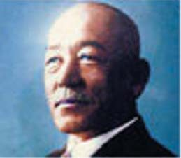
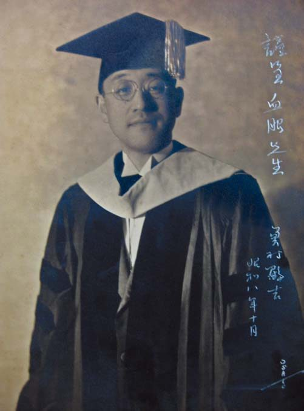
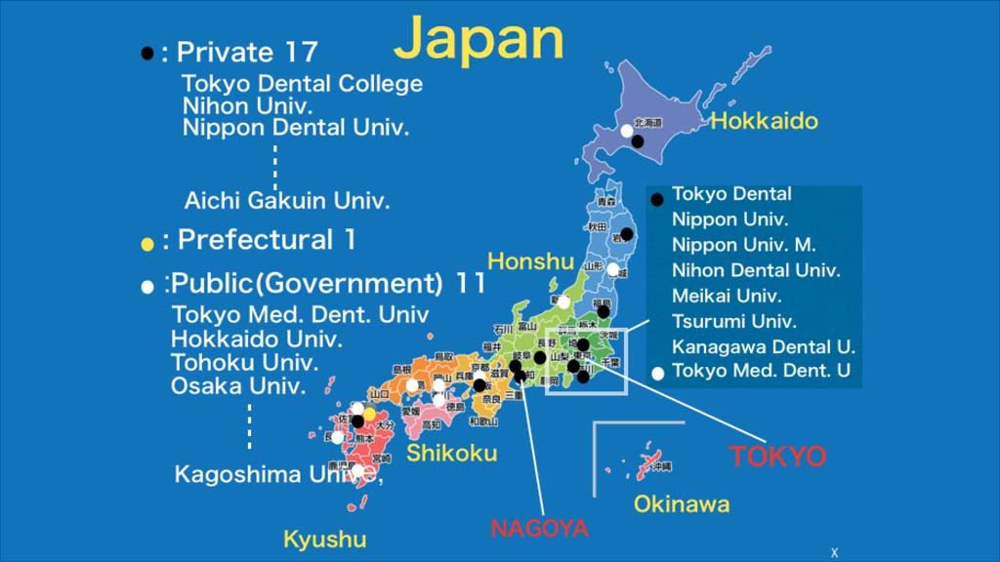
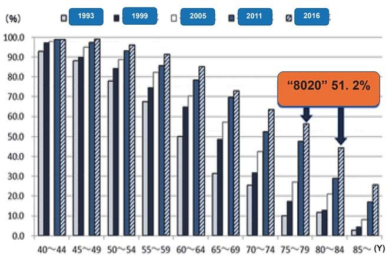
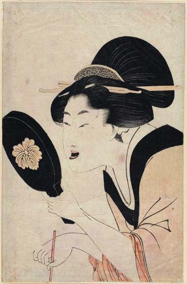
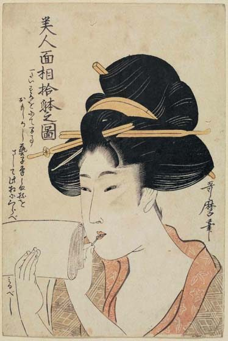
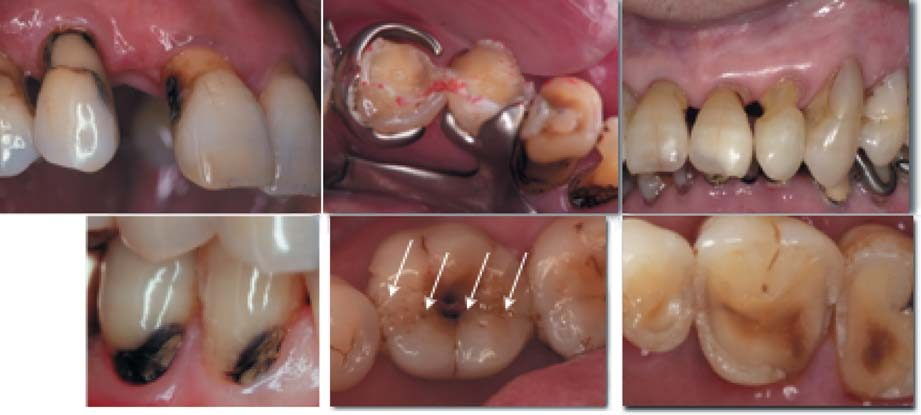
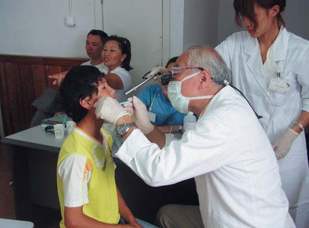
— Шановний Сенда Акіра-сенсей! Японські гравюри укійо-е зафіксували зубну моду минулих століть — фарбування зубів у чорний колір. Напевно, нині цього ніхто не робить. А чи залишилося зовсім у минулому правило японського етикету, яке строго веліло жінкам, усміхаючись, прикривати рукою рот?
— Ясна річ, звичай фарбувати зуби (охаґуро, від ha — зуби, guro (kuro) — чорний) існував у Японії 300-400 років тому. Як Ви, напевно, знаєте, головний інгредієнт фарби для охаґуро — залізо, і щоб захиститися від карієсу зубів та інших хвороб, японські жінки фарбували зуби в чорний колір перед тим, як вийти заміж (або коли вагітніли). Однак цей звичай був поширений тільки в багатих родинах, серед забезпечених людей. Ми, члени IFED, якось уже обговорювали культурні відмінності в лікуванні зубів, тема мала назву «Захід зустрічається зі Сходом».
Що ж до звичаю прикривати зуби, коли ми, люди Сходу, усміхаємося або сміємося, то це аж ніяк не наслідок охаґуро, а просто манера! Японська національна культура — не така проста штука!
«Стоматологічне лікування в Японії в основному покривається страховкою»
— Чи існують якісь особливості в організації стоматологічної допомоги у вашій країні?
— Опитування, проведене Міністерством охорони здоров'я, праці та соціального забезпечення Японії у 2016 році, засвідчило, що в Японії налічується 104533 стоматологи (чоловіків 76,7%, жінок 23,3%) і що на 100000 населення припадає приблизно 82 стоматолога. У стоматологічних клініках працюють 89166 стоматологів, 9308 стоматологів працюють у лікарнях, пов'язаних з університетами і/або установами, інші — у лікарнях загального профілю. Таким чином, більшість стоматологів Японії працюють у своїх приватних клініках як власники чи асоційовані партнери. У неофіційному звіті говориться, що стоматологічну клініку (один стоматолог) відвідують за день у середньому близько 15 пацієнтів (в залежності від розташування клініки).
Найважливішими характеристиками стоматології (і всіх видів медичного обслуговування) в Японії є те, що лікування більшості громадян покривається державним медичним страхуванням, а стоматологічне обслуговування в основному покривається страховкою, за винятком керамічних реставрацій, імплантатів і т. п. Люди оплачують 20-30% вартості від ціни в будь-яких клініках і/або лікарнях, а 70-80% оплачуються державними організаціями. Тому всі ціни на стоматологічні послуги, включаючи реставрації та протезування, офіційно визначені і прописані.
— Доводилося читати, що в Японії здійснювалася програма «8020», спрямована на збереження стоматологічного здоров'я літніх людей…
— «Геріатрична стоматологія» значно розширилася за останні десятиліття. Адже Японія є одним із «лідерів у суспільстві старіння» у світі. Програма «8020» означає «зберегти 20 зубів у віці 80 років». Статистичний аналіз засвідчує, що понад 50% японців у віці 75-84 років виконали «8020». Отже, японським стоматологам у своїй повсякденній практиці доводиться мати справу з багатьма літніми пацієнтами.
Зокрема, карієс поверхні кореня нині є великою проблемою, і геріаестетична (геріатрик + естетик) стоматологія також є одним з основних моментів, тому що показник «Якість життя пацієнта (QOL)» був поширений на таких літніх людей. Щоб визначити ступінь стоматологічної резистентності, ризики карієсу і захворювань пародонту, повинні розглядатися як дуже важливі для лікування малоінвазивна, профілактична та геріатрична стоматології. Отже, ми розробили діагностичні апарати для великих промислових компаній Японії, і завдяки цьому на японський ринок були випущені Saliva Multi Test від LION і Bacteria Counter від Panasonic Health Care. Щоб використовувати ці діагностичні апарати, стоматологам тепер дозволено навчати своїх пацієнтів, щоб ті могли об'єктивно, послідовно і легко контролювати своє стоматологічне здоров'я, отримавши невелику кількість слини для тестування.
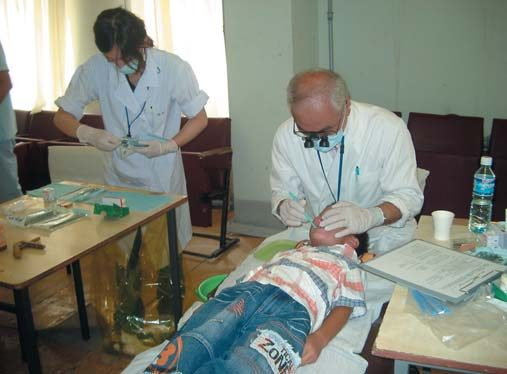
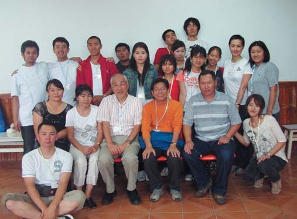
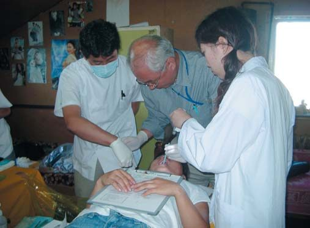
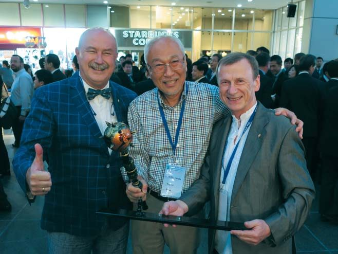
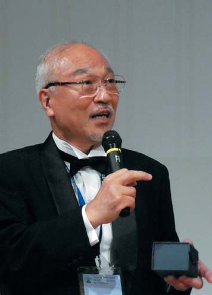
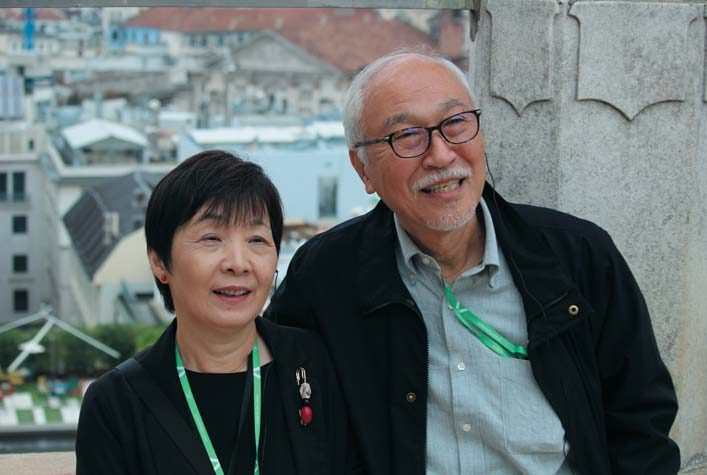
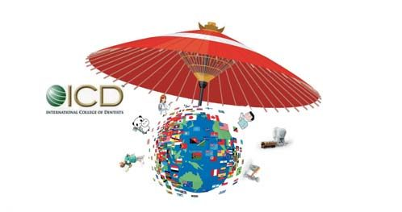
«Я завжди радий бачити здорових дітей і робити їх здоровими і щасливими»
— Шановний Сенда Акіра-сенсей, чому Ви обрали професію стоматолога?
— Я народився у 1948 році, це було лише через три роки після Другої світової війни, тому я був одним з покоління «бебі-бумерів» (їм нині 75-70 років). Це означає, що в такому віці було багато дітей і завжди була велика конкуренція між ними. Таким чином, було досить важко потрапити в медичні та/або стоматологічні школи, бо було дуже мало місць для дуже великої кількості абітурієнтів. Однак я дуже хотів допомагати людям, що страждають від хвороб і поганого стану ротової порожнини. Я вирішив кинути виклик проходженню таких «вузьких в'їзних воріт» і обов'язково вступити в медичну чи стоматологічну школу. Я був здібним учнем і вступив у стоматологічну школу Університету Айті Гакуїн у 1967 році.
Коли я закінчив навчання, склав іспит на стоматолога в Національній раді і став стоматологом у 1973 році, мені довелося починати свою професійну діяльність в умовах, коли стоматологи повинні були лікувати понад 100 пацієнтів на день. Про стоматологів тоді говорили, що вони працюють, як метелики, що літають від квітки до квітки, а стоматологічний прийом називали «трихвилинним лікуванням»…
У той час, коли наша країна відновлювалася економічно після війни, люди в Японії стали споживати жирну їжу, солодощі і т. п. Отже, у всіх японських дітей був дуже поганий стан ротової порожнини і вони дуже потребували стоматологічної допомоги, хоча це і були «трихвилинні процедури». У таких умовах у лікарів не було можливості системно вести профілактику стоматологічних захворювань та впроваджувати інновації в гігієні ротової порожнини пацієнтів, тому що всі вони працювали, як «у шпиталях на полях битв». Я ніколи не погоджувався з таким підходом до стоматології і вирішив вивчати більше наукової та сучасної стоматології як науковий співробітник і викладач у моїй рідній школі.
У 1995 році я був обраний професором і завідувачем кафедри оперативної стоматології Школи стоматології Університету Айті Гакуїн. Довелося присвятити себе не лише викладанню та науковим дослідженням, але й адміністративній роботі на посадах заступника декана (2011-2012, 2015-2016), віце-президента університетської лікарні (2006-2011) і виконувача обов'язків директора Школи зубних техніків Університету Айті Гакуїн (2018-2019). Тепер я викладаю у Школі гігієністів при Коледжі рідного університету, з яким пов'язані понад 46 років мого трудового життя.
— Ви відомі у світі також своєю волонтерською діяльністю. Звання почесного доктора Національного університету медичних наук Монголії у 2001 році Вам присвоїли, відзначаючи Ваше віддане добровільне стоматологічне навчання і лікування пацієнтів у цій країні. Що було стимулом для Вашого інтересу до гуманітарних проектів?
— Під час роботи у моїй Стоматологічній школі я кілька разів був залучений у громадську команду стоматологів, які надавали стоматологічну допомогу на сільських островах у префектурі Окінава. Я був досвідченим волонтером, керівником групи. Цей досвід став мені у пригоді і для гуманітарної волонтерської роботи в сільських районах Монголії. Я завжди радий бачити здорових дітей і робити їх здоровими і щасливими, а також люблю працювати з молодими студентами і стоматологами. Ось це головний стимул.
— Хто найбільше вплинув на Ваше особисте і професійне життя?
— Звичайно, передусім мій батько. Він був типовим, дисциплінованим професійним солдатом, але після війни перетворився на дуже ніжну людину, яка любить музику, фотографує і малює. У нього було кілька друзів за кордоном, хоча він був строгим японським військовим хлопцем. Вони часто відвідують нашу сім'ю. Отже, я думаю, що мій глобальний світогляд сформував батько.
На моє професійне життя вплинув мій колишній керівник відділення, професор Хара, який закінчив Токійський стоматологічний коледж, що був також школою засновника ICD, професора Цурукіті Окумура, і там працював другим президентом. Професор Хара був не лише чудовим ученим, а й художником на практиці. Коли я був молодим і мене просили сфотографувати його пацієнтів, я завжди стежив за його методами відновної стоматології, і мене вражали його естетичні прийоми.
Коли в 1987-1988 роках я був запрошеним професором в Університеті Західного Онтаріо, Канада, на мене вплинули доктор Рон Джордан, автор знаменитого підручника «Естетичне композитне з'єднання» («Esthetic Composite Bonding»), і мій старший брат доктор Майк Судзукі. Я тоді багато чого навчився не лише в клінічній естетичній та адгезивній стоматології, але і в реальній інтернаціональності у стоматології. Вони чудові «кенакс», що означає дуже хороший, прекрасний канадець. Доктор Судзукі настійно рекомендував мені приєднатися до ICD. Після повернення до Японії, коли мене обрали професором і завідувачем кафедри, мене висунули і запросили в ICD. Я завжди ціную цих впливових у своєму житті людей і намагаюся стежити за їхніми досягненнями у стоматології і житті.
— Пане президенте, у Вас є хобі?
— Це велике питання для мене! З тих пір, як у 1995 році я став професором і завідувачем кафедри, у мене було дуже мало вільного часу, доводилося працювати старанніше, без вихідних і свят. Я втратив багато захоплень, таких як гра в теніс, гольф і катання на гірських лижах. Один з моїх онуків сказав: «Мій дідусь — мандрівник!»
Коли я був студентом університету, у мене була фолк-група (подібна до найпопулярнішої фолк-групи 1960-х років «Peter, Paul and Mari»), і я грав на акустичному басі та гітарі. Я був «Paul»! Так що це одне з хобі — просто насолоджуватися музикою. Моя англійська, до речі, прийшла з пісень 1950-70-х років!
Я також люблю водити машини, особливо по звивистих дорогах. Далеко не всі, в тому числі і моя дружина, люблять те, як я воджу. Я тепер за кермом SUBARU LEVORG 2.0 STI!
«Слід поліпшити обмін досвідом між дистриктами»
— Які цілі і плани Ви сподіваєтеся реалізувати під час свого президентства?
— Як я вже згадував, як президент 2020 року, що є століттям ICD, я справді хочу успішно провести святкування разом з усіма членами Міжнародної колегії з усього світу. Члени ICD можуть не сумніватися в успіху святкування наступного століття.
Ми всі, члени ICD, — під одним дахом! Я вважаю, що ця конкретна парасолька означає, що всі ми — стоматологи, у яких є універсальне завдання і відповідальність — сприяти здоров'ю і щастю всього людства. Отже, ми маємо бути тісніше пов'язані. Ми — «Одна команда», що означає «Один за всіх, і всі за одного!»
Я б запропонував усім дистриктам і регіонам поліпшити обміни між дистриктами і спробувати зрозуміти кожного з них, як наблизитися до нашої універсальної мети, що сприяє розвиткові людства. Отже, я б зосередився на тому, щоб мотивувати спілкування між секціями та офісом Колегії.
Я також настійно бажав би під час мого президентства збільшити сприяння та вплив на Колегію з боку комітетів з комунікації та членства. Вірю, що це допоможе нашим гуманітарним проектам бути краще впізнаваними в усьому світі. Ми також можемо досягти цієї мети шляхом співпраці з іншими міжнародними організаціями, такими як ВООЗ, FDI, IADR та іншими. Звичайно, це вимагає часу, тому я б зробив перший крок під час свого президентства.
Ще раз дякую за надану мені чудову можливість представити ICD, яка проводить «вшанування провідних стоматологів світу». Будь ласка, приєднуйтеся до нас у Нагої, де будемо святкувати сторіччя 13 листопада 2020 року!